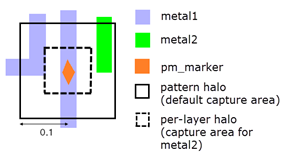
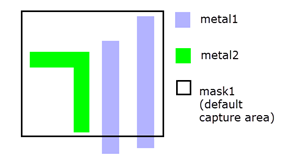

Layer operation
License: Calibre Pattern Matching
Identifies and classifies patterns based on interactions between polygons on target layers and a seed or pattern mask layer. The seed or pattern mask layer polygons are written to the output layer with an attached pattern class property. You can optionally save the classified patterns to a pattern library.
Calibre must run in hierarchical mode (-hier) in order to use DFM Pattern Classify.
DFM PATTERN CLASSIFY
{LAYER_TARGET target_layer [LAYER_NUMBER layer_number]
[layer_halo] [FROM_EXTENTS | FROM_EDGES]
[DENSITY_PROP [PROP_NAME prop_name] [KEEP_ORIGINAL_DENSITY] ]
[VERTEX_PROP [PROP_NAME prop_name] [KEEP_ORIGINAL_VERTEX] ]
}…
{{SEED seed_layer
HALO {halo | x_halo y_halo} [FROM_EXTENTS | FROM_EDGES]
[ALLOWED_SHIFT value [SEARCH_LEVEL EXACT] ]
[MAX_LENGTH value]}
| {LAYER_MASK pattern_mask_layer }
}
[CLASSIFY_PROPERTY prop_name]
[OUTPUT {ALL | {UNIQUE [CONSISTENT] [NO_HIER]}}]
[OUTPUT_LAYER {DEFAULT | BBOX | BBOX10}]
[OUTFILE filename [KEEP_ORIGINAL {SEED | ALL}]]
[LAYER_PATTERN_MARKER marker_spec marker_name]
[SET_PROP prop_name [MIN | MAX] ]
[PATTERN_NAME_PREFIX pat_name_prefix]
[PATTERN_NAME {COUNTER | CLASSIFY_PROPERTY}]
[ADD_PROPERTY DIM_MIN_WIDTH LAYER_TARGET target_layer] …
[ADD_PROPERTY DIM_MIN_SPACE LAYER_TARGET target_layer] …
[ADD_PROPERTY DIM_MIN_C2C LAYER_TARGET target_layer] …
[ADD_ATTRIBUTE PATTERN_LOCATION]
[DUP_COUNT dup_prop_name
[CLASS_SORT_KEY dup_prop_name
[DESCENDING | ASCENDING] [CONSISTENT]] ]
[MATCH_ORIENTATIONS
{YES | NO | X_AXIS | Y_AXIS | ROTATION | REFLECTION} ]
[CAPTURE_ORIENT orient_prop_name]
[REFERENCE_LIB [ref_lib] [NEW_PAT_PROP prop_name]
[OUTREF_ALL out_lib]
[OUTFILE_NEW new_pmdb] [OUTFILE_COMMON common_pmdb]]
DFM PATTERN CLASSIFY BY_POLYGON
{LAYER_TARGET target_layer [VERTEX_PROP [PROP_NAME prop_name]]}
[CLASSIFY_PROPERTY prop_name]
[DUP_COUNT dup_prop_name]
[OUTPUT {ALL | {UNIQUE [CONSISTENT] [NO_HIER]}}]
[OUTPUT_LAYER {DEFAULT | BBOX | BBOX10}]
[ADD_PROPERTY DIM_MIN_WIDTH LAYER_TARGET target_layer]
[DUP_COUNT dup_prop_name
[CLASS_SORT_KEY dup_prop_name
[DESCENDING | ASCENDING] [CONSISTENT]] ]
[MATCH_ORIENTATIONS
{YES | NO | X_AXIS | Y_AXIS | ROTATION | REFLECTION} ]
[CAPTURE_ORIENT orient_prop_name]
A required keyword in Syntax 2 that specifies to classify individual polygons on the target_layer. The BY_POLYGON keyword must be the first keyword after the command name. The keywords listed in the Syntax 2 are the only supported keywords with BY_POLYGON. The SEED and LAYER_MASK keywords are not used. See “Polygon Classification” for details and “Example 3”.
A required argument set specifying a target layer in the layout and related options. The secondary keywords are order dependent and should be specified in the order that is shown. This keyword set may be specified any number of times. The target layers are used for pattern identification and classification and are generally layers that might cause manufacturing problems.
target_layer — Required argument specifying an original or derived polygon layer. The polygons that exist on the target_layer within the bounds of the capture area are copied to the pattern layer, where the capture area is determined by the SEED and LAYER_MASK keyword sets.
LAYER_NUMBER layer_number — An optional keyword set that specifies the layer number that is assigned to the pattern layer in the saved pattern library.
If not specified, original layers are assigned the layer number determined from the LAYER and LAYER MAP statements in the rule file.
layer_halo — An optional value that defines a per-layer halo region. The layer_halo value is specified in user units and defines a square halo region centered on the seed_layer shapes and with a width of 2 * layer_halo. If layer_halo is specified, target_layer shapes must be within the per-layer halo region to be included in the pattern—the layer_halo overrides the HALO value for the specified target_layer. The SEED keyword must be specified if a layer_halo is used. If every target layer has a specified layer_halo value, then the HALO keyword set is optional. The pattern extent is determined by the largest halo value specified.
If FROM_EXTENTS or FROM_EDGES is specified with HALO, the keyword is used when determining the per-layer halo region. If FROM_EXTENTS or FROM_EDGES is specified for a specific target_layer, the specified behavior is used for that target_layer.
If OUTFILE is specified, the per-layer halo is saved as a per-layer custom extent in the saved pattern library.
FROM_EXTENTS | FROM_EDGES — An optional keyword choice that specifies how to measure the per-layer halo region for the target_layer. The keywords can be specified with or without a layer_halo value for the target_layer. The keyword definitions are provided with the HALO keyword description. The per-layer halo is measured from the center of the seed_layer shape by default.
The SEED keyword must be specified if these keywords are used. If FROM_EDGES is specified, non-Manhattan seed_layer shapes are ignored and a warning is issued. FROM_EDGES cannot be used with ALLOWED_SHIFT.
layer_halo is specified — The specified FROM_EXTENTS or FROM_EDGES behavior is used to determine the target_layer halo region.
layer_halo is not specified — The HALO value and the specified FROM_EXTENTS or FROM_EDGES behavior is used to determine the target_layer halo region. A single halo value must be specified; separate x- and y-halo values are not supported.
DENSITY_PROP [PROP_NAME prop_name] [KEEP_ORIGINAL_DENSITY] — An optional keyword set that specifies to calculate the density for the specified target_layer. The density is calculated per pattern and per target layer, and is the ratio of the target_layer area to the pattern extent.
The density property is named DENSITY_target_layer by default. The density property is attached to the output layer shape. If OUTFILE is specified the property is also saved to the pattern library.
PROP_NAME prop_name — Optional keyword set that specifies to use prop_name as the name of the density property rather than the default.
KEEP_ORIGINAL_DENSITY — If ALLOWED_SHIFT is specified, by default the density is calculated at the location of the adjusted pattern center. If KEEP_ORIGINAL_DENSITY is specified the density is calculated with the pattern center at the original location, which is the center of the seed_layer shape. This option can only be specified if the ALLOWED_SHIFT keyword is specified.
The following figure shows the density calculation for two patterns captured in the same operation. The density is only calculated for the metal1 target layer. The pattern on the left has a metal1 density of 0.75, while the pattern on the right has a metal1 density of 0.5.
VERTEX_PROP [PROP_NAME prop_name] [KEEP_ORIGINAL_VERTEX] — An optional keyword set that specifies to calculate the real vertex count for the specified target_layer.
The vertex count property is named VERTEX_target_layer by default. The property is attached to the output layer shape. If OUTFILE is specified the property is also saved to the pattern library.
Real vertices are those that do not touch the pattern or layer extent. A count of ‑1 is returned if the pattern extent is empty. A count of 0 is returned if there are no real vertices, such as for a BCM pattern.
PROP_NAME prop_name — Optional keyword set that specifies to use prop_name as the name of the property rather than the default.
KEEP_ORIGINAL_VERTEX — If ALLOWED_SHIFT is specified, by default the vertex count is calculated at the location of the adjusted pattern center. If KEEP_ORIGINAL_VERTEX is specified the vertex count is calculated with the pattern center at the original location, which is the center of the seed_layer shape. This option can only be specified if the ALLOWED_SHIFT keyword is specified.
A keyword set that specifies a seed layer name. This keyword set is required if LAYER_MASK is not specified. Polygons on the SEED layer determine the locations in the layout that are used as the starting points for pattern classification. The SEED layer is generally a layer that indicates where problem areas are located in the layout, such as a hotspot or contact layer.
It is possible to specify both SEED and LAYER_MASK. In this case the pattern capture area is determined by the shapes on the pattern_mask_layer, while the shapes on the seed_layer that are within the pattern extent are instantiated as marker shape(s) for the captured pattern. The HALO keyword is not used in this case.
A required keyword set if SEED is specified. The HALO keyword set defines the halo region, which is centered on the seed_layer shapes. The target_layer shapes within the bounds of the halo region are used for pattern classification. The halo size is specified in user units. See Figure 2.
halo — The width of the square halo region is 2 * halo. By default the halo is measured from the center of the seed_layer shape.
x_halo y_halo — The halo region is 2 * x_halo in the x-direction, and 2 * y_halo in the y-direction.
FROM_EXTENTS — An optional keyword that specifies to measure the halo size from the bounding box of the seed_layer shape.
FROM_EDGES — An optional keyword that specifies to measure the halo from the edges of the seed_layer shape, rather than from the center of the shape. Non-Manhattan seed_layer shapes are ignored and a warning is issued. The keyword cannot be used with ALLOWED_SHIFT or with independent x_halo and y_halo values.
The HALO keyword is not allowed with the LAYER_MASK keyword.
An optional keyword set that specifies to perform auto-centering of the pattern location if value is greater than zero. The default is to not perform auto-centering. ALLOWED_SHIFT is only valid when the SEED keyword is specified.
Auto-centering primarily uses shapes on the first listed target_layer.
value — Defines a square search region centered on the seed_layer shape and with a width of 2*value. An internal algorithm uses target layer edges and vertices within the search region to optimize the location of the pattern center. If any target layer edges or vertices exist within the seed_layer shape, they contribute to auto-centering regardless of the ALLOWED_SHIFT value. If no target layer edges are found within the search region, the pattern center is not adjusted. The use of ALLOWED_SHIFT may increase the number of duplicate patterns that are found.
When specified, the ALLOWED_SHIFT value is recommended to be at least half the halo size set with HALO.
SEARCH_LEVEL EXACT — Specifies to use an improved search algorithm that attempts to optimize the number of duplicate patterns that are identified, thus reducing the total number of patterns that are captured. Compared to the case when SEARCH_LEVEL EXACT is not specified, the search finds more duplicate patterns and increases runtime.
SEARCH_LEVEL EXACT also enables auto-centering when only edges (no vertices) are present within the search range. BCM patterns are not auto-centered unless SEARCH_LEVEL EXACT is specified.
When SEARCH_LEVEL EXACT is specified an error is issued if the ALLOWED_SHIFT value is greater than the HALO value.
MAX_LENGTH is not allowed with SEARCH_LEVEL EXACT. The MAX_LENGTH keyword is ignored if used and a warning is issued.
Auto-centering is often useful when the process that produces the seed_layer shapes results in seed locations that vary from run to run.
The auto-centering algorithm for ALLOWED_SHIFT in DFM Pattern Classify is the same as that used in DFM Pattern Capture. See “MAX_SEARCH and SEARCH_LEVEL EXACT Keywords for Pattern Auto-Centering” in DFM Pattern Capture for further discussion and illustrations.
An optional keyword set used only with SEED that causes seed_layer edges to be split into segments that are at most value user units long. The value is a floating-point number. The default is 0, indicating no segmentation. See Figure 2 in the DFM Pattern Capture operation.
MAX_LENGTH is not allowed with SEARCH_LEVEL EXACT. The MAX_LENGTH keyword is ignored when used with SEARCH_LEVEL EXACT and a warning is issued. MAX_LENGTH is not allowed with LAYER_MASK.
A keyword set that specifies a pattern mask layer name, where shapes on the pattern_mask_layer define the pattern extents. This keyword set is required if SEED is not specified. Use this option if the problem areas in the layout cannot be located with a SEED layer or if you want to define custom pattern locations and extents. The target_layer shapes within the boundary of a pattern_mask_layer shape are used for pattern classification. The shapes on pattern_mask_layer must be Manhattan in order to result in a classified pattern.
HALO, ALLOWED_SHIFT, and MAX_LENGTH generate an error if LAYER_MASK is specified.
An optional keyword set that specifies the name (prop_name) of the pattern class property. The default pattern class property name is “class” if this keyword set is not specified.
The pattern class property is an integer property attached to all of the polygons written to the output layer. If OUTFILE is specified, the property is also saved to the classified patterns in the pattern library. See the “Description” section and Table 3.
An optional keyword set that specifies which polygons to write to the output layer. The OUTPUT_LAYER keyword determines the shape of the output polygon. The SET_PROP keyword set affects the output if UNIQUE is specified.
OUTPUT ALL — Output all polygons. This is the default behavior.
OUTPUT UNIQUE — Output only one polygon for each pattern class. The MATCH_ORIENTATIONS keyword set affects what is considered a unique or duplicate pattern. All polygons for pattern class = ‑1 (no identified pattern) are output.
CONSISTENT — When CONSISTENT is specified, for each pattern class, the output polygon is the lowest of the leftmost polygons with respect to the top cell. Without CONSISTENT, the output polygon is selected by an internal algorithm.
NO_HIER — Causes the unique polygon for each pattern class to be output in the top cell.
Without NO_HIER, the unique geometry for a pattern class is output in the cell to which it was promoted for processing. If that cell is placed multiple times in the design, the “unique” output polygon for a pattern class will have several placements when considered flat.
DFM Pattern Classify operations run concurrently if they differ only in the OUTPUT keyword set and SEARCH_LEVEL EXACT is not specified. See “Concurrency” for more information.
The SET_PROP keyword set affects the selection of the output polygon.
Keywords |
Output Polygon Selection |
|---|---|
OUTPUT UNIQUE |
Output one shape for each pattern class. The shape is selected by an internal algorithm. All shapes with pattern class of ‑1 are output. |
OUTPUT UNIQUE CONSISTENT |
Output one shape for each pattern class. The lower left-most shape is output. All shapes with pattern class of ‑1 are output. |
SET_PROP myprop [MIN | MAX] OUTPUT UNIQUE |
Output one shape for each pattern class. The shape is selected by the SET_PROP criteria. If more than one shape meets the criteria, the shape is selected by an internal algorithm. All shapes with pattern class of ‑1 are output. |
SET_PROP myprop [MIN | MAX] OUTPUT UNIQUE CONSISTENT |
Output one shape for each pattern class. The shape is selected by the SET_PROP criteria. If more than one shape meets the criteria, the lower left-most shape is output. All shapes with pattern class of ‑1 are output. |
An optional keyword set that specifies the shape of the polygon on the output layer. The DEFAULT behavior is used if OUTPUT_LAYER is not specified.
DEFAULT — The shape on the output layer depends on the presence of the SEED, LAYER_MASK, and BY_POLYGON keywords:
SEED only — Output layer shape is the seed_layer shape.
LAYER_MASK only — Output layer shape is the pattern_mask_layer shape.
SEED and LAYER_MASK — If a seed_layer shape exists within the pattern bounding box, it is used as the output layer shape, otherwise the pattern_mask_layer shape is used.
BY_POLYGON — Output layer shape is the target_layer shape.
BBOX — The shape on the output layer is the pattern bounding box.
BBOX10 — The shape on the output layer is the pattern bounding box with its width and length sized down to approximately ten percent of the original values. The minimum width and length is 1 dbu.
If BBOX or BBOX10 is specified and there is not a valid pattern at the capture location, the seed_layer shape or pattern_mask_layer shape is output.
An optional keyword set that specifies to save a pattern library (PMDB) to filename. The “.pmdb” file extension is added automatically if it is not included.
OUTFILE cannot be specified with REFERENCE_LIB.
KEEP_ORIGINAL — An optional keyword for OUTFILE that can only be used with ALLOWED_SHIFT SEARCH_LEVEL EXACT. When specified, duplicate patterns are identified and classified as with ALLOWED_SHIFT SEARCH_LEVEL EXACT, however the pattern saved to the PMDB is centered on the original seed_layer shape, rather than the shifted center.
If DENSITY_PROP or VERTEX_PROP is specified, the density or vertex count is calculated with the pattern center at the seed_layer shape. The shapes on the output layer have the property value calculated for that seed location.
SEED and ALL determine which patterns are saved to the PMDB.
SEED — One pattern per class is saved to the PMDB. For a set of duplicate patterns, the lowest of the leftmost seed_layer shapes is selected for creating the saved pattern. The pattern center is the seed_layer shape.
If DENSITY_PROP or VERTEX_PROP is specified, by default the property value saved to the pattern in the PMDB is the minimum property value for the set of patterns with the same class ID. You can change the default behavior with SET_PROP prop_name MAX.
ALL — One pattern is saved for each seed layer shape that corresponds to a valid pattern. This can result in multiple patterns with the same class ID. The pattern center is the seed_layer shape. KEEP_ORIGINAL ALL cannot be specified with OUTPUT UNIQUE.
If DENSITY_PROP or VERTEX_PROP is specified, each pattern has the property value calculated for the corresponding seed_layer shape.
An optional keyword set that specifies a marker type and marker name. This keyword set may be specified multiple times to add multiple markers to the pattern. It is recommended that the keyword be specified fewer than 255 times due to limitations in the compile library utility.
marker_spec — Defines the type of marker. Choose one of the following:
marker_layer — Shapes on marker_layer within the pattern extent define a custom-type marker. The marker_layer cannot be a target_layer. If there are no shapes on the marker_layer within the pattern extent, a marker of type “Empty” is created.
BBOX — The marker is the pattern bounding box.
BBOX10 — The marker is the pattern bounding box with its width and length sized down to approximately ten percent of the original values. The minimum width and length is 1 dbu.
HOTSPOT — The marker is created using shapes on the seed_layer. An error is returned if the SEED keyword is not specified.
If seed_layer and pattern_mask_layer are both specified, or a large MAX_SEARCH value is specified, it is possible for the seed_layer shape to be partially or completely outside the pattern bounding box. If the seed_layer shape is completely outside the pattern bounding box, the BBOX10 method is used to create the marker; otherwise the marker is the Boolean AND of the seed_layer shape and the pattern bounding box.
MASK — The marker is the pattern_mask_layer shape. An error is returned if the LAYER_MASK keyword is not specified.
DRAWN_LAYER layername — The marker is the pattern geometries on layername that are within the pattern bounding box. The layername must be a target_layer. If there are no layername geometries within the pattern bounding box, a marker of type “Empty” is created.
MATCHED_LAYER layername — The marker is the matched geometries on layername that are within the pattern bounding box. The layername must be a target_layer. If there are no layername geometries within the pattern bounding box, a marker of type “Empty” is created.
marker_name — The marker name, which cannot include white space.
For general information on markers, see “Marker Layer” in the Calibre Pattern Matching User’s Manual.
An optional keyword set that specifies selection criteria for the numeric property prop_name when saving the property value to the pattern library when OUTFILE is specified. This keyword set also affects the selection of shapes on the output layer when OUTPUT UNIQUE is specified.
By default the minimum property value is saved to the pattern if duplicate patterns have differing values for a property. Specify MAX with this keyword set in order save the maximum value for the property prop_name when duplicate patterns are found.
See the OUTPUT keyword set for the behavior when OUTPUT UNIQUE is specified.
This keyword set may be specified only once. If prop_name is not a numeric property, a warning is issued and the keyword set is ignored.
An optional keyword set that sets the prefix for the pattern name to the string pat_name_prefix.
By default, all patterns are named “_P_n”, where n is an integer value determined by the PATTERN_NAME keyword. When PATTERN_NAME_PREFIX is used, the pattern name is “pat_name_prefixn”.
The pat_name_prefix string may contain alphanumeric characters and underscores. White space is not allowed.
An optional keyword set that specifies how the numeric portion of the pattern name is determined. Pattern names have the form “_P_n” by default, or “pat_name_prefixn” when PATTERN_NAME_PREFIX is specified.
n is an integer value determined as follows:
COUNTER — This is the default if PATTERN_NAME is not specified. n is an ordinal that is incremented by one for each pattern. By default the ordinal value starts at zero for the first pattern that is output. However, if PATTERN_NAME_PREFIX is specified, the ordinal value starts at one.
CLASSIFY_PROPERTY — n is the pattern class value (the class ID).
An optional argument set that adds a property named MIN_WIDTH_target_layer to shapes on the output layer and to the saved pattern library. The property value contains the minimum width of the target_layer shapes in the pattern. Values are in user units. The width is measured between interior sides of opposite parallel edges. Virtual edges (edges coincident with the pattern extent) are not considered. A value of 0 is assigned if no appropriate measurement can be made.
You can specify this argument set multiple times with different target layers.
An optional argument set that adds a property named MIN_SPACE_target_layer to shapes on the output layer and to the saved pattern library. The property value contains the minimum spacing for target_layer shapes in the pattern. Values are in user units. The spacing is measured between exterior sides of opposite parallel edges. A value of 0 is assigned if no appropriate measurement can be made.
You can specify this argument set multiple times with different target layers.
An optional argument set that adds a property named MIN_C2C_target_layer to shapes on the output layer and to the saved pattern library. The property value contains the minimum corner to corner spacing for target_layer shapes in the pattern. Values are in user units. The corner to corner spacing is measured as with External CORNER TO CORNER, and only measures edges that are parallel with no projection onto each other. A value of 0 is assigned if no appropriate measurement can be made.
You can specify this argument set multiple times with different target layers.
An optional argument that adds pattern attributes to each captured pattern. The attributes are named loc_x and loc_y and contain x and y coordinates in user units, in the top cell coordinate space. The coordinates are the lower left vertex of the seed_layer or pattern_mask_layer shape from which the pattern was captured. If duplicate patterns were captured from different locations in the layout, the coordinates from the lower left location are saved to the pattern. Attributes are only saved to the pattern library.
In order for the location coordinates saved to the pattern to match those of the output layer shape, UNIQUE CONSISTENT must be specified and the default output layer shape should be output (that is, OUTPUT_LAYER BBOX or BBOX10 is not specified). In addition, results must be output in the top cell; that is, the DRC Cell Name YES CELL SPACE statement should not be in the rule file.
An optional keyword set that adds the property dup_prop_name to each shape on the output layer, where dup_prop_name contains the total number of occurrences per classified pattern. If OUTFILE is specified, the property is also saved to the classified patterns in the pattern library. The minimum value for any classified pattern is 1, corresponding to the original pattern instance. Polygons that do not result in a classified pattern (pattern class of ‑1) have a DUP_COUNT property of 0. The keyword set MATCH_ORIENTATIONS affects what is considered a unique or duplicate pattern.
An optional keyword set that assigns the pattern class value in descending or ascending order based on the duplicate count (the number of occurrences of the classified pattern). This keyword set can only be specified with the DUP_COUNT keyword.
dup_prop_name — The property name specified with the DUP_COUNT keyword.
DESCENDING — A class value of 1 is assigned to the pattern with the highest duplicate count. This is the default.
ASCENDING — A class value of 1 is assigned to the pattern with the lowest duplicate count.
CONSISTENT — Pattern class values are assigned so that the values are consistent from run to run. If two patterns have the same duplicate count value, the pattern from the lowest of the leftmost polygons is selected first.
If OUTPUT UNIQUE is specified, CONSISTENT is automatically used.
An optional argument set that specifies which orientations of an otherwise identical pattern are classified as duplicate patterns.
YES — All rotations and reflections of a pattern are classified as duplicate patterns. This is the default.
NO — Patterns with the same orientation are considered duplicate; rotations and reflections of a pattern are considered unique patterns.
X_AXIS — Reflections of a pattern across the horizontal axis are considered duplicate.
Y_AXIS — Reflections of a pattern across the vertical axis are considered duplicates.
ROTATION — Rotations of a pattern are considered duplicates.
REFLECTION — Horizontal and vertical reflections of a pattern are considered duplicates.
An optional keyword set that adds the property orient_prop_name to each output layer shape. The property value indicates the orientation in which the pattern was captured, where the possible values are 0-7, as shown in Figure 7 in the DFM Pattern Capture operation. The first captured instance of a pattern has an orient_prop_name value of 0. Duplicate pattern instances have a property value that indicates the orientation with respect to the first pattern instance.
CAPTURE_ORIENT cannot be used with OUTPUT UNIQUE. However, if the rule file has an operation with OUTPUT ALL and CAPTURE_ORIENT, and a concurrent operation with OUTPUT UNIQUE, the shapes on both output layers have the orient_prop_name property, and shapes at the same location have the same value. If there is more than one operation with OUTPUT ALL and CAPTURE_ORIENT, the output layer from the OUTPUT UNIQUE operation has the orient_prop_name from the first concurrent operation in the rule file with CAPTURE_ORIENT. Also see “Concurrency”.
An optional keyword set that enables the Pattern Matching Reference Library (PMRL) flow. See “Pattern Matching Reference Library Flow” in the “Description” section for details. The keywords and values in this argument set must be specified in the order shown. OUTFILE cannot be specified with REFERENCE_LIB.
REFERENCE_LIB [ref_lib] — Specifies to use the PMRL flow with the ref_lib reference library file. The ref_lib file must already exist; it cannot be one created during the same Calibre run. The ref_lib argument may be omitted if OUTREF_ALL is specified.
NEW_PAT_PROP prop_name — Specifies a user-defined property name (prop_name) for the new pattern property. The default property name of “is_new_pat” is used if this keyword set is not specified.
If ref_lib is omitted, all patterns are identified as new and the new pattern property is attached to output shapes only when this keyword set is specified.
OUTREF_ALL out_lib — Specifies to create a new reference library file named out_lib that contains the patterns in the input ref_lib plus the new patterns found in the current layout.
If ref_lib is omitted, all valid patterns are saved to out_lib. See the “Description” section for details on the value of the new pattern property.
OUTFILE_NEW new_pmdb — Specifies to create a pattern library named new_pmdb that contains only patterns that are not in the reference library (ref_lib). The ref_lib argument must be specified.
OUTFILE_COMMON common_pmdb — Specifies to create a pattern library named common_pmdb that contains only patterns from the current layout that are also found in the reference library (ref_lib). The ref_lib argument must be specified.
DFM Pattern Classify identifies patterns on target layers, where the pattern locations are specified with polygons on a seed layer or pattern mask layer. The pattern locations are typically chosen as potential problem areas in the layout; a hotspot or contact layer is often used when a seed layer is specified. Each pattern is assigned an integer pattern class property, where duplicate patterns have the same pattern class value. The pattern class can be used to identify similar problem areas in the layout. By default, the output layer contains the polygons on the seed layer or pattern mask layer; the pattern class property is attached to each polygon, along with any numeric properties attached to the polygons on the target layers. A pattern library containing the classified patterns is created if the OUTFILE keyword is specified.
The operation identifies patterns composed of the shapes on the target_layer(s). The pattern locations and extents are determined as follows:
Keywords |
Pattern locations and extents |
|---|---|
SEED seed_layer HALO {halo | x_halo y_halo} [FROM_EXTENTS | FROM_EDGES] |
The locations are determined by the shapes on seed_layer. If MAX_LENGTH value is specified, any hotspot shape edges longer than value are split into segments that are at most value long. The segmenting of a hotspot shape increases the number of pattern locations. The ALLOWED_SHIFT keyword set specifies a search distance used for auto-centering the pattern during classification. The pattern extent is the halo region, with size determined by halo or x_halo y_halo. If the seed shape edges are segmented, each resulting polygon is treated as a separate seed shape. The FROM_EXTENTS and FROM_EDGES keywords change how the halo region is measured. You can specify a per-layer halo region for specific target layers to adjust the capture area for that target layer. See the LAYER_TARGET keyword. |
LAYER_MASK pattern_mask_layer |
The locations are determined by the shapes on pattern_mask_layer. The pattern mask shapes must be rectangular. The pattern extent is the extent of the pattern mask shape. |
Patterns are composed of shapes on the target_layer(s) that are within the pattern extent; in other words, the shapes on the target_layer(s) are clipped at the pattern extent when identifying a pattern. The following figure shows examples using both a seed_layer and a pattern_mask_layer. The seed_layer example also uses a per-layer halo.
SEED and HALO with per-layer halo  Result: The metal1 shapes within the pattern halo extent are captured. There are no metal2 shapes within the metal2 per-layer halo extent, so the captured pattern does not include metal2 shapes. |
LAYER_MASK  Result: The metal1 and metal2 shapes within the mask1 extent are captured. |
Only TEM and BCM patterns are identified. The pattern classification is determined by exact pattern matching and duplicate patterns receive the same pattern class property value. The pattern class property is an integer and has the default property name of “class”; the property name can be changed with the CLASSIFY_PROPERTY prop_name keyword set. By default all rotations and reflections of a given pattern are considered duplicates; this can be changed with the MATCH_ORIENTATIONS keyword set. If the SEED keyword is used, you can increase the number of duplicate patterns found by specifying the ALLOWED_SHIFT keyword. See the argument description and the “Examples” section for information on ALLOWED_SHIFT.
To obtain pattern class properties that are consistent from run to run, specify DUP_COUNT and CLASS_SORT_KEY CONSISTENT.
The pattern class property is set to ‑1 if no pattern is identified for the seed or pattern mask shape. This can happen in the following cases:
There are no target_layer edges or vertices within the pattern extent. This can happen if there are no target_layer shapes within the pattern extent, or if the target_layer shapes completely cover the pattern extent.
A pattern mask layer shape is not rectangular when LAYER_MASK is specified.
You can use the DFM Property operation to select only the output layer shapes with a valid pattern class property. This is useful when the output layer of DFM Pattern Classify is used in further processing and locations without a valid pattern should not be processed. You can also select for the invalid locations and write the output to a rule check for examination. For example:
hs_out = DFM PATTERN CLASSIFY LAYER_TARGET M2
SEED pat_hotspot HALO 0.05
valid_hs = DFM Property hs_out [class = PROPERTY(hs_out, class)] != -1
bad_hs = DFM Property hs_out [class = PROPERTY(hs_out, class)] == -1
bad_hs { COPY bad_hs }You can classify polygon shapes using DFM Pattern Classify and the BY_POLYGON keyword. This classification mode is similar to pattern classification, but classifies individual polygons on the target layer, rather than target layer shapes within the capture region. The SEED or LAYER_MASK keyword is not used to define the capture area and a pattern library is not created. The default property name for the polygon class value is “class”; this can be changed with the CLASSIFY_PROPERTY keyword.
By default the output layer is a copy of the input layer, with attached properties. Original layers are merged on input, as is the standard practice for Calibre, and the merged shapes are classified. You can specify the OUTPUT_LAYER keyword to output a BBOX10 or BBOX shape instead of the target layer shape. Depending on the input shapes, these output markers may overlap and be merged on the output layer. You can choose to output only one shape per class by specifying the OUTPUT UNIQUE keyword.
The operation considers orientation by default, meaning that identical shapes with a different orientation have the same class ID. You can specify what orientations are considered duplicates with the MATCH_ORIENTATIONS keyword. See “Example 3”.
Shape classification with BY_POLYGON is similar to the “Classify result shapes” option in Calibre RVE for DRC, which calculates the #SC property; see “Viewing Properties in Calibre RVE for DRC” in the Calibre RVE User’s Manual. However, BY_POLYGON considers orientation, while Calibre RVE does not.
By default, the output layer includes seed shapes (including segmented seed shapes) or pattern mask shapes unless the BY_POLYGON keyword is specified. See Table 1 for a discussion of segmented seed shapes. By default all seed or pattern mask shapes are output. If OUTPUT UNIQUE is specified, only one shape for each pattern class is output, however all shapes with a pattern class property of ‑1 (no identified pattern) are output.
You can specify that the output shape for valid pattern locations is a BBOX or BBOX10 shape with the OUTPUT_LAYER keyword.
The properties in the following table are attached to each output shape. Some properties are not available with the BY_POLYGON keyword.
Property |
Discussion |
|---|---|
Pattern class |
The pattern class property is always attached and has the property name “class” (the default) or a user-specified property name if CLASSIFY_PROPERTY is specified. The property is an integer value. Duplicate patterns have the same classification value. The MATCH_ORIENTATIONS keyword set affects what is considered a duplicate pattern. Locations for which no pattern is identified have a pattern class property of ‑1. |
Density (optional) |
The density value is attached if DENSITY_PROP is specified. The property value is the ratio of the target_layer area to the pattern extent. The default property name is DENSITY_target_layer; the property name can be specified with PROP_NAME. KEEP_ORIGINAL SEED/ALL and KEEP_ORIGINAL_DENSITY both affect the density calculation when ALLOWED_SHIFT is also specified. These keywords are useful when you want the density calculated with the pattern centered on the original seed layer shape, rather than the shifted center. |
Vertex count (optional) |
The real vertex count for a pattern layer is attached if VERTEX_PROP is specified. The default property name is VERTEX_target_layer; the property name can be specified with PROP_NAME. KEEP_ORIGINAL SEED/ALL and KEEP_ORIGINAL_VERTEX both affect the vertex count when ALLOWED_SHIFT is also specified. |
New pattern property (optional) |
Used when REFERENCE_LIB is specified for the Pattern Matching Reference Library flow. See Table 4 for details. |
Dimensional measurements (optional) |
Dimensional measurements are attached when any of the ADD_PROPERTY keyword sets is specified. |
Duplicate count (optional) |
The duplicate count property is only written if DUP_COUNT is specified, and gives the total number of occurrences of the pattern. The duplicate count is set to 0 if no pattern was identified for the shape (pattern class property of ‑1). |
Captured orientation (optional) |
The property orient_prop_name is written if CAPTURE_ORIENT is specified, and gives the orientation in which the pattern was captured. See the keyword definition for details. |
Attached properties (optional) |
Numeric properties that are attached to the seed_layer or pattern_mask_layer shape are copied to the output layer. Attached properties are set to 0 if no pattern was identified for the shape (pattern class property of ‑1). If a property on the seed_layer or pattern_mask_layer shape has the same name as one of the output properties listed in this table, the property value on the seed_layer or pattern_mask_layer shape is not used. Only the output property value is used. No warning is issued in the transcript. |
You should make sure that the names of properties added by the operation do not conflict with each other or with existing properties. Property data can be lost if property names conflict.
Properties added by the operation are listed in the preceding table. These include properties that exist on the seed_layer or pattern_mask_layer.
A pattern library is saved if OUTFILE is specified. Duplicates are automatically removed from the pattern library, so OUTPUT UNIQUE has no effect on the pattern library. The properties listed in the preceding table are saved to the pattern library, with the exception of the new pattern property. Location attributes are saved to each pattern if ADD_ATTRIBUTE PATTERN_LOCATION is specified.
The pattern name can be specified with the PATTERN_NAME_PREFIX keyword set and further adjusted with the PATTERN_NAME CLASSIFY_PROPERTY keyword. See the argument descriptions for details.
If duplicate patterns have differing property values, the minimum property value is saved to the pattern by default. This process is followed even when KEEP_ORIGINAL SEED, KEEP_ORIGINAL_DENSITY, or KEEP_ORIGINAL_VERTEX is specified. The “SET_PROP prop_name MAX” keyword set specifies to save the maximum property value for the property prop_name. See the keyword definition for the behavior with KEEP_ORIGINAL ALL.
The keyword KEEP_ORIGINAL SEED/ALL can be used when ALLOWED_SHIFT SEARCH_LEVEL EXACT is used. When specified, the saved pattern is centered on an original seed_layer shape, rather than the shifted center. See the keyword definition for details.
By default, the pattern marker is named “Marker” and is created from the seed_layer or pattern_mask_layer shape. You can specify additional markers with the LAYER_PATTERN_MARKER keyword set.
Layer names in a pattern library can contain alphanumeric characters and underscores (_); special characters are not allowed. However, special characters may be encountered in the layer names that are used as inputs to the operation. This can happen in an encrypted flow or if a layer name with special characters is enclosed in quotes in order to create a string constant. If a special character is encountered in a layer name, it is replaced with an underscore. If the replacement of special characters with underscores results in duplicate layer names, ‘_num’ is appended to the second and subsequent layer names, where num is an integer starting with one and incremented each time. The corrected layer names are used in the pattern library.
The Pattern Matching Reference Library (PMRL) flow enables you to quickly determine if patterns captured from the current layout do or do not exist in a reference library. Only the pattern geometries (target_layers) and pattern extent are considered when comparing patterns. Also see “Calibre Pattern Matching Reference Library Flow” in the Calibre Pattern Matching User’s Manual for more detail, including instructions on creating a reference library with the pdl_lib_mgr convert utility.
When the REFERENCE_LIB keyword is specified, the operation attaches a new pattern property to each output shape.
Property Name |
|
Property attached when … |
|
Property Value |
0 — The pattern exists in the reference library (ref_lib) 1 — The pattern is new. Invalid pattern locations (those with a pattern class property of ‑1) also have a new pattern property value of 1. If ref_lib is not specified and “NEW_PAT_PROP prop_name” is specified, the property prop_name is attached to the output shapes with a value of 1 for all cases. |
The behavior of the operation depends on the combination of the ref_lib argument and the OUTREF_ALL keyword as follows:
REFERENCE_LIB ref_lib [NEW_PAT_PROP prop_name] [OUTREF_ALL out_lib]
Compare current patterns to those in the reference library and attach the new pattern property to the output shapes. If OUTREF_ALL is specified, the operation creates a new reference library file named out_lib that contains the patterns in the input ref_lib plus the new patterns found in the current layout. The new pattern property is named is_new_pat by default; this can be changed with the optional keyword NEW_PAT_PROP.
When ref_lib is specified, you can also specify OUTFILE_NEW and OUTFILE_COMMON to create pattern libraries containing the new and common patterns between the current capture and the reference library.
REFERENCE_LIB [NEW_PAT_PROP prop_name] OUTREF_ALL out_lib
Create a new reference library named out_lib consisting of all valid patterns. The new pattern class property always has the value of 1, and is only attached to the output shapes if NEW_PAT_PROP is specified. This operation should only be used if you are confident of the output, as the resulting reference library cannot be examined.
See “Example 2”.
DFM Pattern Classify operations run concurrently under the following conditions:
SEARCH_LEVEL EXACT is not specified
Command options are the same except for the following:
OUTPUT keyword set ({ALL | {UNIQUE [CONSISTENT] [NO_HIER]}})
CAPTURE_ORIENT orient_prop_name
If CAPTURE_ORIENT is specified with OUTPUT ALL, the orient_prop_name property is also attached to output from a concurrent operation with OUTPUT UNIQUE. See the CAPTURE_ORIENT for details.
In this example, the DFM Pattern Classify command specifies one target layer to be used for identification. The SEED layer is specified with the HALO value in order to locate problem areas in the layout. A halo, or square extent, is created with the specified HALO value that originates from a seed shape’s center. The ALLOWED_SHIFT option is used, which identifies similar patterns within a specified distance from the seed shape’s center and classifies them together. The ALLOWED_SHIFT value is at least two times smaller than the HALO value, which is required. Additionally, The CLASSIFY_PROPERTY option is also specified, which specifies a different property name than the default “class”.
classified = DFM PATTERN CLASSIFY
LAYER_TARGET metal
SEED pm_marker
HALO 0.1
ALLOWED_SHIFT 0.05
CLASSIFY_PROPERTY classIDIn the following figure, five seed_layer polygons are classified using DFM Pattern Classify and the specified options. Specifying an ALLOWED_SHIFT value results in classifying three of the five locations into the same class due to their similar polygons and spacing.
This example uses the Pattern Matching Reference flow to determine if a layout has new patterns compared to a reference library. A new reference library is created which combines the existing patterns with the new patterns.
See “Creating a Pattern Matching Reference Library (PMRL)” in the Calibre Pattern Matching User’s Manual for instructions on creating the reference library using the pdl_lib_mgr convert utility.
You can also create a reference library by omitting the input ref_lib argument and including OUTREF_ALL. The input layout should be a known layout that creates known patterns from DFM Pattern Classify. For example:
DFM Pattern Classify LAYER_TARGET metal1 SEED hotspot HALO 0.1
REFERENCE_LIB OUTREF_ALL seedpatterns.pmrlLAYOUT PATH "layout.gds"
LAYOUT SYSTEM GDS
LAYOUT PRIMARY "top"
DRC RESULTS DATABASE drc_compare_results
DRC CELL NAME YES CELL SPACE XFORM
LAYER M2 18
LAYER pat_hotspot 1001// attach some properties to seed and mask layer
seed = DFM PROPERTY pat_hotspot [area_s = AREA(pat_hotspot)]
hs_out = DFM PATTERN CLASSIFY
LAYER_TARGET M2
SEED seed HALO 1.45
REFERENCE_LIB seedpatterns.pmrl
OUTREF_ALL new_seed.pmrl
// OUTFILE_NEW new_lib.pmdb
// OUTFILE_COMMON common_lib.pmdb// create new layer with only the output shapes that correspond to
// new (is_new_pat ==1) and valid (class != -1) patterns
new_hs = DFM Property hs_out
[new_pat = PROPERTY(hs_out, is_new_pat)] == 1
[ - = PROPERTY(hs_out, class)] != -1new_hs_pats {
@ RVE Show Layers: 18 1001
DFM Copy new_hs
DFM RDB new_hs compare.rdb CELL SPACE CHECKNAME "%_l_"
}hs_out {
@ RVE Show Layers: 18 1001
DFM Copy hs_out
DFM RDB hs_out compare.rdb CELL SPACE CHECKNAME "%_l_"
}The check new_hs_pats includes only the shapes that correspond to new patterns. The check hs_out contains all shapes on the seed layer, including those that did not result in a valid pattern. The RVE Show Layers check text comment is used to control the visibility of the design layers when highlighting the check results. See “RVE Show Layers” in the Calibre RVE User’s Manual.
The DFM Pattern Classify keywords OUTFILE_NEW and OUTFILE_COMMON specify to create pattern libraries with the new and common patterns between the current capture and the reference library. Uncomment these lines in the example if you want to compare results by viewing a pattern library.
Use the BY_POLYGON keyword to classify shapes on layer1. Specify MATCH_ORIENTATIONS REFLECTION so that shapes that are identical after reflection about the x- or y-axis have the same class value. Add a minimum width property to each output shape.
class_reflect = DFM PATTERN CLASSIFY BY_POLYGON
LAYER_TARGET layer1
DUP_COUNT dupcount
ADD_PROPERTY DIM_MIN_WIDTH LAYER_TARGET layer1
MATCH_ORIENTATIONS REFLECTION
class_out {
DFM RDB class_reflect class.rdb CELL SPACE CHECKNAME "%_l_"
}The output layer has DFM properties named class, dupcount, and MIN_WIDTH_layer1 with values for the polygon class, number of shapes with the same class value, and the minimum width of the polygon.